松尾芭蕉まつおばしょう
- 生没年
- 1644〜1694年
- 出身地
- 伊賀国（現在の三重県伊賀市）
- 国籍
- 日本
- どんな人
- 俳人
- 活動した時代
- 江戸時代
江戸時代の俳人。もともとは言葉遊びの面が強かった俳諧を、自然や人の心を深く見つめる芸術に高めた。弟子の曾良と東北・北陸を歩いて旅し、紀行文『おくのほそ道』を書いた。
主な作品
- 『おくのほそ道（奥の細道）』（1702年・紀行文）
作家ごとに、覚えておきたいポイント・生きた時代・出身地・代表作品・ほかの作家とのつながりをまとめています。名前や作品名を押すと、関係するページへ移動できます。
点線の下線がついた言葉は、押すと単語帳でやさしい説明が読めます。
外国の作家・文学者は、海外の作家のページにまとめています。
江戸時代の俳人。もともとは言葉遊びの面が強かった俳諧を、自然や人の心を深く見つめる芸術に高めた。弟子の曾良と東北・北陸を歩いて旅し、紀行文『おくのほそ道』を書いた。
江戸時代の終わりごろのお坊さん。お寺を持たずに質素に暮らしながら、短歌や漢詩、俳句をつくった。村の子どもたちと手まりをついて遊んだ話が有名。松尾芭蕉を深く尊敬していたとされる。
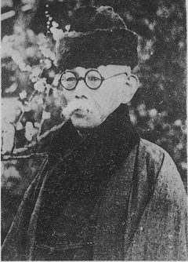
評論『小説神髄』で、「小説は、人の心や世の中をありのままに写すものだ」と唱え、日本の新しい小説の出発点をつくった。シェイクスピアの作品をすべて日本語に訳したことでも知られる。
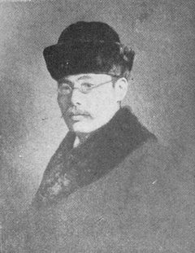
ふだん話す言葉に近い書き方（言文一致）で小説『浮雲』を書き、坪内逍遥が唱えたリアリズムを、実際の作品の形にした。ロシアの小説の翻訳でも活躍した。
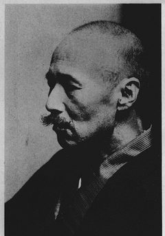
陸軍のお医者さん（軍医）としてドイツに留学し、そのときの体験をもとに『舞姫』を書いた。医者と作家の二つの仕事を続け、年をとってからは『高瀬舟』などの歴史小説を書いた。夏目漱石と並ぶ明治の文豪。
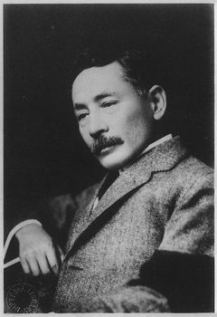
覚えておきたいポイント
英語の先生をしたあとイギリスに留学し、『吾輩は猫である』で作家として注目された。その後は新聞に小説を連載する作家になり、『三四郎』『こころ』など、人の心を深く描いた作品をたくさん書いた。森鷗外と並ぶ文豪で、芥川龍之介は漱石の門下生。
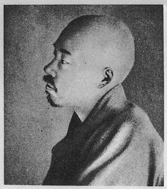
見たものをありのままに言葉でえがく「写生」を大切にして、俳句と短歌を新しく生まれ変わらせた。「俳句」というよび方を広めた人でもある。夏目漱石とは学生時代からの親友。重い病気で寝たきりになってからも、随筆『病牀六尺』などを書き続けた。
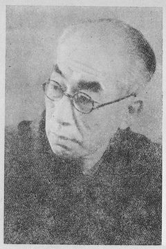
はじめは詩集『若菜集』で、恋や青春の気持ちをうたう浪漫主義の詩人として活躍した。のちに小説『破戒』を書き、自然主義を代表する作家になった。
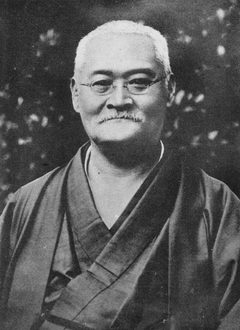
自分自身の体験をもとに書いた小説『蒲団』が大きな話題になり、自然主義の流れを決定づけた。この作品は、私小説の始まりともいわれる。
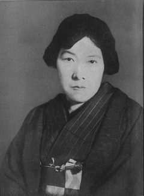
歌集『みだれ髪』で、恋する気持ちを情熱的にうたい、浪漫主義の短歌を代表する歌人になった。戦争に行った弟を思う詩「君死にたまふことなかれ」でも知られる。
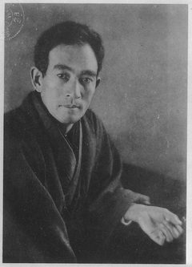
仲間と雑誌『白樺』をつくった、白樺派の中心となった作家。むだのない正確な文章で知られ、「小説の神様」とよばれた。
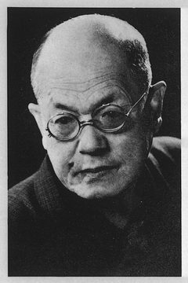
志賀直哉らと雑誌『白樺』をつくった、白樺派の中心人物。人間のよさを信じる考え方で、小説『友情』などを書いた。
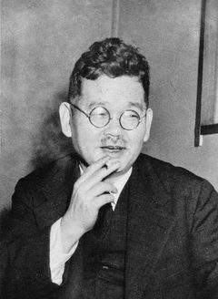
芥川龍之介とともに同人誌『新思潮』で活動した友人。のちに雑誌『文藝春秋』をつくり、亡くなった友人の名前を残すため、芥川賞と直木賞をつくった。
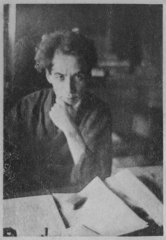
大学生のときに書いた『鼻』を夏目漱石にほめられ、作家として認められた。古い物語集『今昔物語集』などをもとにした、工夫に満ちた短編小説をたくさん書いた。35歳で亡くなり、のちに友人の菊池寛が、芥川の名前をつけた芥川賞をつくった。
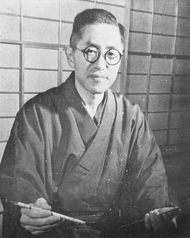
俳句雑誌『層雲』をつくり、季語や五・七・五の決まりにとらわれない自由律俳句を唱えた。種田山頭火や尾崎放哉を育てた。
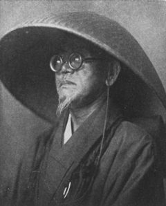
お坊さんの姿で各地を歩いて旅しながら、自由律俳句をたくさんよんだ。荻原井泉水の俳句雑誌『層雲』で句を発表した。
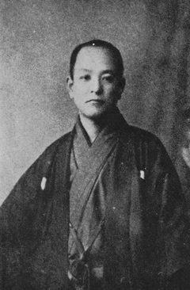
会社づとめをやめたあと、各地のお寺で暮らしながら、ひとりきりのさびしさを見つめる自由律俳句をよんだ。晩年は小豆島で過ごした。荻原井泉水に俳句を学んだ。
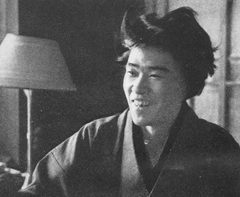
川端康成らと雑誌『文芸時代』をつくり、新しい感じ方や表現を追い求める新感覚派の中心になった。
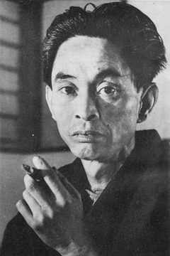
『伊豆の踊子』『雪国』『古都』などで、日本の美しさや人の心のこまやかな動きを描いた。若いころは新感覚派の作家として活躍した。1968年、日本人で初めてノーベル文学賞を受けた。芥川賞の選考委員もつとめた。
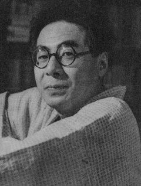
戦争が終わった直後に評論『堕落論』を発表し、古い決まりにしばられない生き方を説いた。太宰治らとともに無頼派とよばれる。
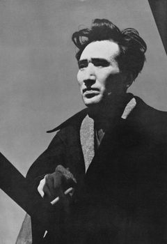
覚えておきたいポイント
若いころから芥川龍之介を敬愛していた。第1回芥川賞の候補になったが受賞できず、選考委員だった川端康成の選評に反発して、川端にあてた手紙の形で抗議の文章を発表した。『走れメロス』のような明るい作品から、戦後の『斜陽』『人間失格』まで多くの作品を書き、無頼派の代表とされる。娘の津島佑子も小説家になった。
覚えておきたいポイント
若いころに川端康成に才能を認められ、戦争のあと作家として大活躍した。きらびやかで美しい文章が特徴。代表作に『金閣寺』、最後の大作に四つの物語からなる『豊饒の海』がある。
覚えておきたいポイント
太宰治の娘（次女）。父の太宰は、津島佑子が1歳のときに亡くなった。家族や女性の生き方をテーマにした小説を書き、外国でも高く評価された。
出典：国立国会図書館「近代日本人の肖像」 (https://www.ndl.go.jp/portrait/)
写真は、すべて著作権の保護期間が終わった画像です。名前を押すと、国立国会図書館のページで元の写真と解説を見られます。写真がない作家（松尾芭蕉・良寛・三島由紀夫・津島佑子）は、名前の一文字のアイコンで表しています。
坪内逍遥、二葉亭四迷、森鷗外、夏目漱石、正岡子規、島崎藤村、田山花袋、与謝野晶子、志賀直哉、武者小路実篤、菊池寛、芥川龍之介、荻原井泉水、種田山頭火、尾崎放哉、横光利一、川端康成、坂口安吾、太宰治